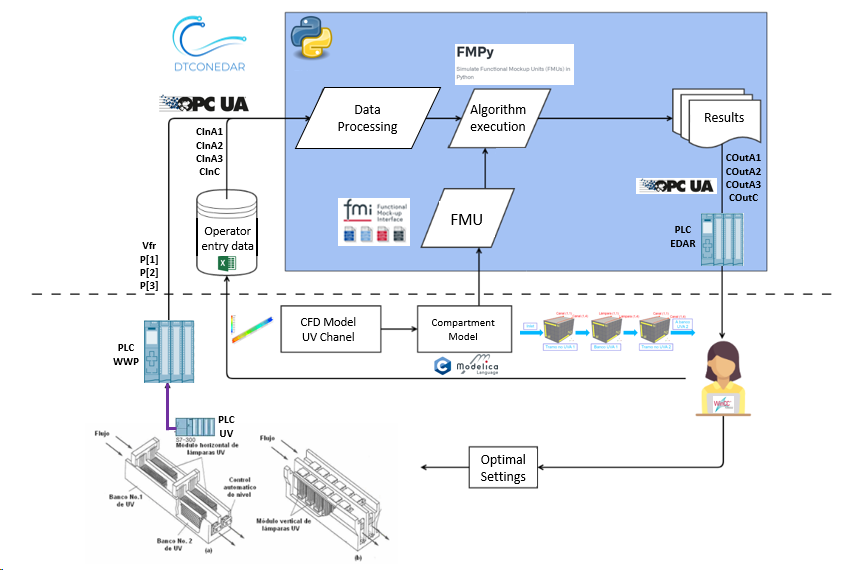
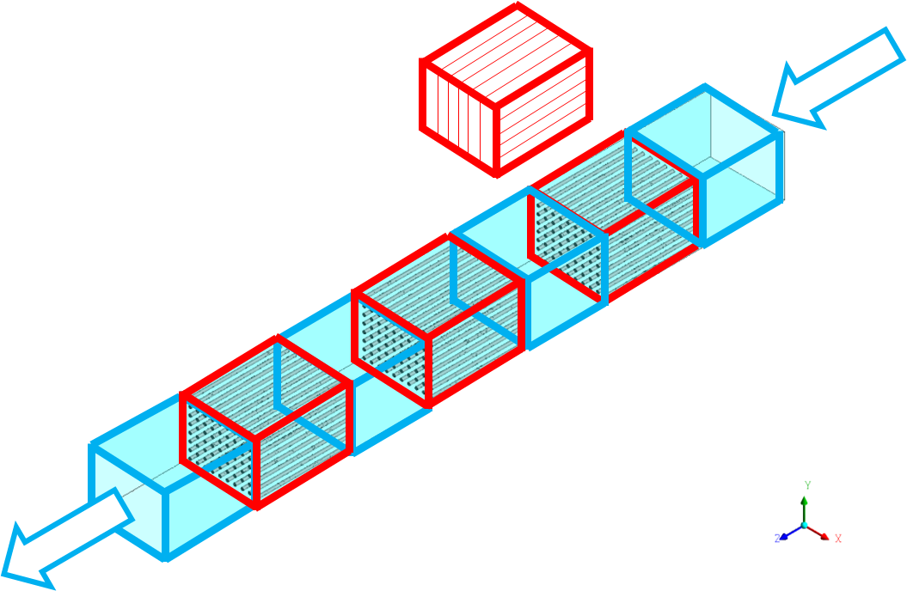
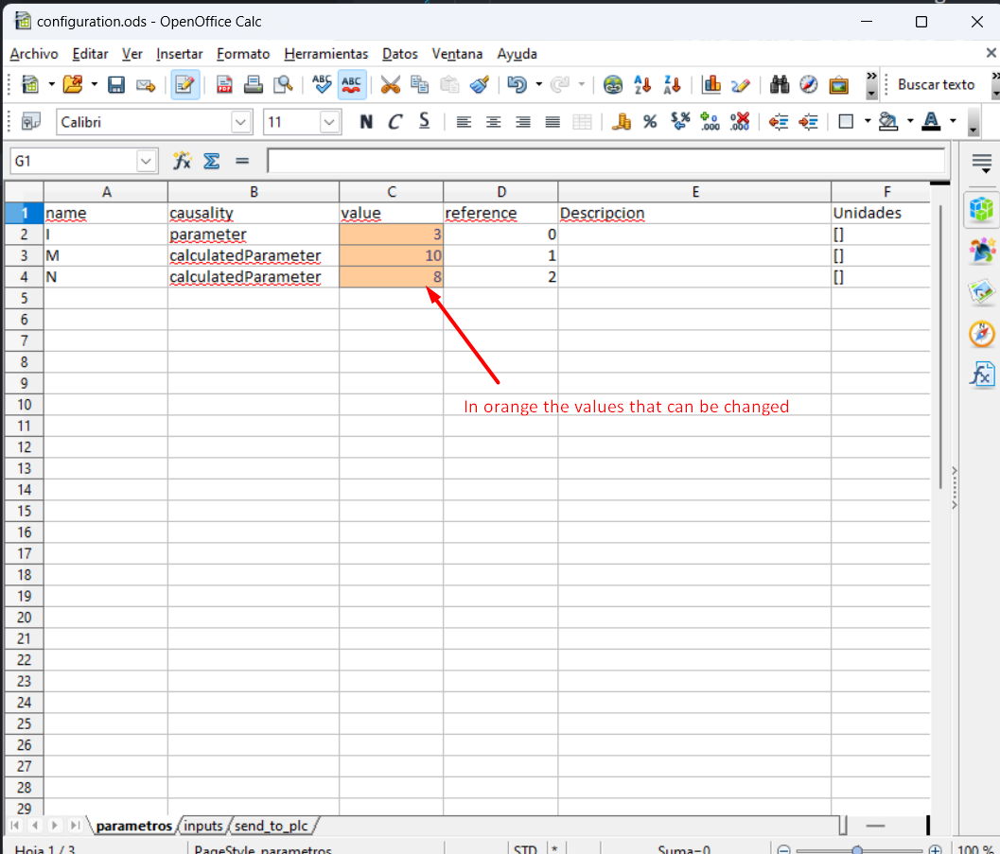
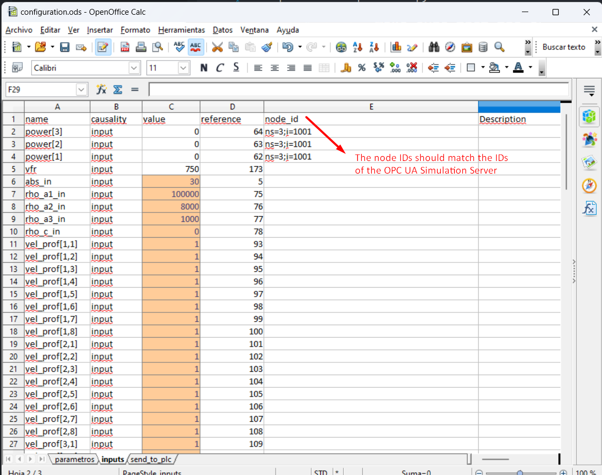
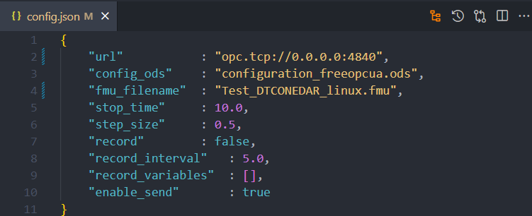

Waste Water Plant with OPC-UA
Introduction
Waste water treatment (WWT) plants must keep substance and species concentrations within regulatory limits to ensure water quality. This is usually checked by taking periodic samples and analysing them in the laboratory, so plant operators lack continuous information for their decisions and set operating setpoints higher than needed to guarantee water quality. Some WWT processes consume a lot of power, so adjusting the setpoints could reduce energy consumption significantly.
Physical Twin Overview
This example shows the communication between a physical ultraviolet (UV) disinfection process (the tertiary treatment of a WWT plant) and its digital twin, which is based on Computational Fluid Dynamics (CFD) and compartment models. The digital twin provides "virtual sensors" that give the plant operator continuous information for decision making.

The physical twin is an ultraviolet channel. A PLC controls the power of the UV lamps needed to kill all the pathogens in the flow. The channel has 3 groups of UV lamps, so the real channel (and its mathematical model) is divided into 7 zones: 4 without UV lamps (the entrance and exit of the channel, plus 2 zones between lamp groups) and 3 for the UV lamps.
The dose to apply (related to the power) changes with the residence time, computed from the measured volume flow, and with the UV intensity measured by the intensity sensor.
The volumetric flow and the power in the three parts of the channel are transmitted to the PLC of the plant. The PLC also works as an OPC UA server that sends data to and receives data from an OPC UA client. Some sizing parameters and initial values, such as the initial concentrations of disinfectant and pathogens, are read from a spreadsheet that the plant operator fills in. The spreadsheet is an Open Office file (.ods) because of the software installed on the SCADA PC. Some of the values the operator defines are input signals that are not measured yet but are expected to be measured in the future.
Digital Twin Overview

The digital twin is a reduced model, written in C, that solves the physical conservation laws (mass, energy and momentum) but simplifies details, mainly the geometry, to calculate in real time while keeping the results accurate. Its results are compared with those of the CFD model. An OpenModelica model uses the C solver, and OpenModelica exports it as an FMU so that the OPC UA client (client-opcua.py) can integrate it.


Digital Twin Configuration
| Asset Type | Name of Asset | Visibility | Reuse in Other Examples |
|---|---|---|---|
| Model | Test_DTCONEDAR.mo | private | No |
| Data | configuration_freeopcua.ods | private | No |
| model_description.csv (generated by client-opcua.py) | private | No | |
| Mock OPC UA Server: opcua-mock-server.py | private | No | |
| Tool | OPC UA Client: client-opcua.py | private | No |
| FMU builder: create-fmu.mos | private | No |
This example uses a dummy model of the plant instead of the real model.
The simplified model, which does not contain the real equations, is
written in OpenModelica (Test_DTCONEDAR.mo). The FMU is generated with
OpenModelica to obtain the binaries needed to run it. A previously
generated FMU can be used, but to make sure the right binaries are used,
install the OpenModelica compiler and run create-fmu.mos to build the
FMU from the Modelica file Test_DTCONEDAR.mo.
The FMU model description file (modelDescription.xml inside
Test_DTCONEDAR.fmu) holds the value references, and
configuration_freeopcua.ods holds the OPC-UA node IDs. The variable
name links the two.
The client Python script (client-opcua.py) performs these actions:
- Reads the variable names and value references from the model
description file of
Test_DTCONEDAR.fmu. - Reads configuration_freeopcua.ods to obtain the OPC UA node IDs and assigns them to the variables read from the FMU.
- Reads configuration_freeopcua.ods to set initial values, parameters and some inputs (a reasonable value is assumed for inputs that are not measured).
- Reads values from the PLC using an OPC UA client.
-
Runs the algorithm with the FMPy library, using the FMU created from the compartment model (based on CFD):
-
Obtains the results.
- Sends the results to the PLC over OPC UA, so that they appear in the SCADA and help the plant operator make decisions.
Input Data Variables
The configuration_freeopcua.ods data file sets the initial input data values used by the server.


DT Config
The config.json file specifies the configuration parameters of the OPC UA client.

These optional parameters can be modified:
- stop_time
- step_size
- record = True, to save the simulation results
- record_interval. When the simulation step_size is small, the results file can become too big. For instance, if the step_size is 0.01 seconds, increase the record_interval to reduce the file size.
- record_variables: the list of variables to record.
- enable_send = True, to send the results to the OPC UA server.
Lifecycle Phases
The example covers these lifecycle phases:
| Lifecycle Phase | Completed Tasks |
|---|---|
| Install | Installs Open Modelica and a Python virtual environment with the required pip dependencies |
| Create | Create FMU from Open Modelica file |
| Execute | Run OPC UA mock server and normal OPC-UA client |
| Clean | Delete the temporary files |
Run the example
To run the example, change to the example directory.
If required, give the lifecycle scripts execute permission.
Now run the following scripts.
Install
Installs OpenModelica and a Python virtual environment (.venv) with the
required pip dependencies.
Create
Creates the Test_DTCONEDAR.fmu co-simulation model from the
Test_DTCONEDAR.mo OpenModelica file.
Execute
Starts the mock OPC UA server in the background, then runs the OPC UA client.
Clean
Removes the temporary files created by OpenModelica and the output files generated by the OPC UA client.
References
More explanation about this example is available at:
Acknowledgements
The work on this example was done in a project subsidised thanks to the support grants for Agrupación Empresarial Innovadora (AEI) of the Ministry of Industry, Trade and Tourism (MINCOTUR) with the aim of improving the competitiveness of small and medium-sized enterprises within the Recovery, Transformation and Resilience Plan (PRTR) financed by the Next Generation EU (NGEU) funds, with Grant Number: AEI-010500-2022b-196.